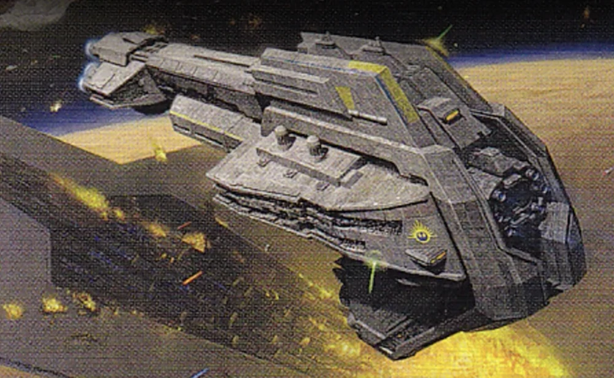

|
 Unity csatahajó30 000 000
|
Unity csatahajó történeteAz Unity egy Starhawk-osztályú Mark I-es csatahajó volt, amely az Új Köztársaság védelmi flottájában szolgált a Galaktikus Polgárháború alatt 5 ABY-ban. Az Unity részt vett a jakkui csatában. Az Unity-t és más Mark One Starhawkokat az Új Köztársaság Galaktikus Szenátusa rendelte meg, hogy támogassák a Köztársaság háborús erőfeszítéseit a birodalmi maradványok ellen a Galaktikus Polgárháború idején. A jakkui csata során az Unity-t és testvérhajóit, a Concordot és az Amity-t egy ék stratégia részeként használták, hogy megpróbáljanak áthatolni a Jakku bolygó feletti sűrű birodalmi csillaghajó-alakzaton. Felszerelése
|